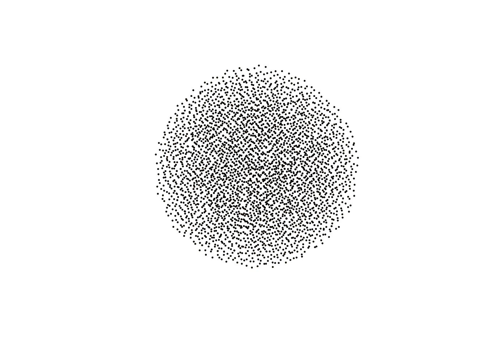
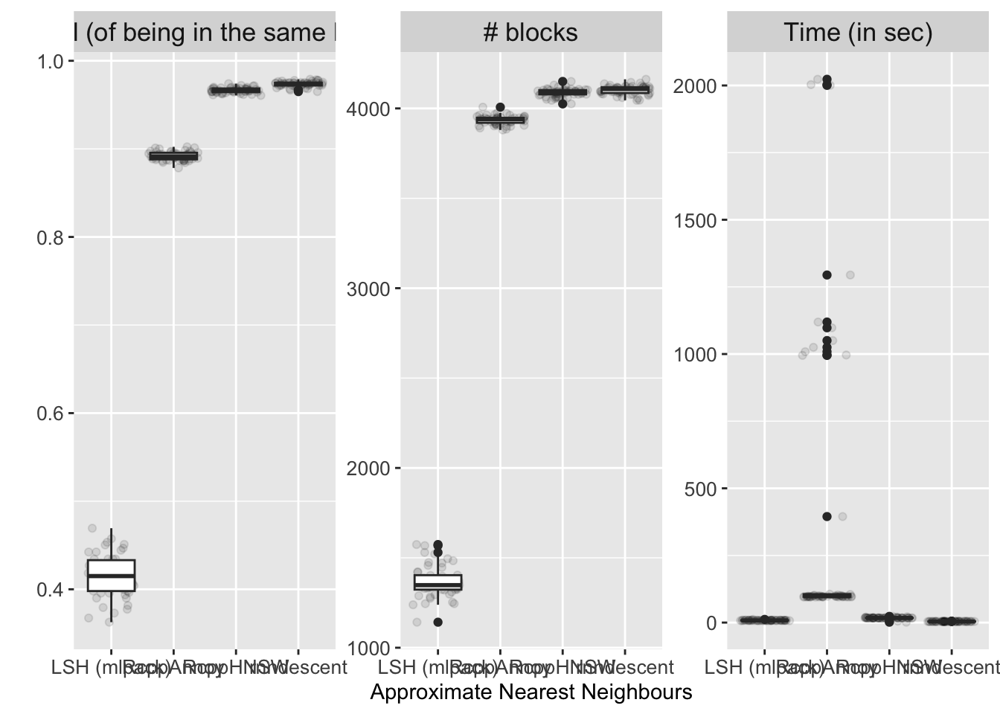

library(data.table)
library(blocking)
library(stringr)
library(stringi)
library(data.table)
library(RecordLinkage)
library(ggplot2)Deduplication supported by the blocking package
Simulation on RLdata 10000
Example based on the RLdata10000 dataset
initial_data <- RLdata10000
setDT(initial_data)
initial_data[, ":="(x=1:.N,y=1:.N)] ## orw identifiers
initial_data[, ":="(fname_c2=ifelse(is.na(fname_c2), "", fname_c2),
lname_c2=ifelse(is.na(lname_c2), "", lname_c2),
bm = str_pad(bm, 2, "left", "0"),
bd = str_pad(bd, 2, "left", "0"))]
initial_data[, txt:=tolower(paste0(fname_c1,fname_c2, lname_c1, lname_c2, by, bm, bd))]
initial_data[, rec_id := identity.RLdata10000] ## true ids
initial_data[, rec_id_count :=.N, rec_id] ## number of duplicates
head(initial_data) fname_c1 fname_c2 lname_c1 lname_c2 by bm bd x y
<char> <char> <char> <char> <int> <char> <char> <int> <int>
1: FRANK MUELLER 1967 09 27 1 1
2: MARTIN SCHWARZ 1967 02 17 2 2
3: HERBERT ZIMMERMANN 1961 11 06 3 3
4: HANS SCHMITT 1945 08 14 4 4
5: UWE KELLER 2000 07 05 5 5
6: DANIEL HEINRICH 1967 05 06 6 6
txt rec_id rec_id_count
<char> <num> <int>
1: frankmueller19670927 3606 1
2: martinschwarz19670217 2560 1
3: herbertzimmermann19611106 3892 1
4: hansschmitt19450814 329 2
5: uwekeller20000705 1994 1
6: danielheinrich19670506 2330 1An example of using blocking packag for the RLdata10000 dataset
res <- blocking(x = initial_data$txt,
deduplication = T,
ann = "nnd",
verbose = T,
distance = "cosine",
n_threads = 8,
graph = T)===== creating tokens =====
===== starting search (nnd, x, y: 10000, 10000, t: 674) =====
===== creating graph =====res========================================================
Blocking based on the nnd method.
Number of blocks: 3117.
Number of columns used for blocking: 674.
Reduction ratio: 0.9998.
========================================================
Distribution of the size of the blocks:
2 3 4 5 6 7 8 9 10 12
1903 780 280 95 24 15 11 3 3 3 Plot
plot(res$graph, vertex.size=1, vertex.label = NA)
Simulation study with geco3
sim1 <- fread("../data-sim/sim_10.csv")
sim1[, ":="(x=1:.N, y = 1:.N)]
sim1[is.na(first_name), first_name:=""]
sim1[is.na(second_name), second_name:=""]
sim1[is.na(last_name), last_name:=""]
sim1[is.na(region), region:=""]
sim1[is.na(birth_date), birth_date:=""]
sim1[is.na(personal_id), personal_id:=""]
sim1[, txt:=tolower(paste0(first_name,second_name, last_name, region, birth_date, personal_id))]
sim1[, unit_id := str_extract(rec_id, "\\d{4,}")]
sim1[, unit_id_count:=.N, unit_id]
sim1[unit_id_count > 1][order(unit_id)] rec_id first_name second_name last_name region
<char> <char> <char> <char> <char>
1: rec-0001-dup-0 LAURA MAZOWIECKIE
2: rec-0001-org LAURA WERONIKA NOWICKA MAZOWIECKIE
3: rec-0004-dup-0 NELA ŚLĄSKIE
4: rec-0004-org NELA ELŻBIETA RACZYŃSKA ŚLĄSKIE
5: rec-0005-dup-0 ANNA
---
5996: rec-9991-org BLANKA DOROTA DZIEDZIC PODKARPACKIE
5997: rec-9994-dup-0 AMELYA LENA STANYSŁAWSKA MAŁOPOLSKIE
5998: rec-9994-org AMELIA LENA STANISŁAWSKA MAŁOPOLSKIE
5999: rec-9995-dup-0 MAŁGORZATA SZCZEPANISKA MAZOWIECKIE
6000: rec-9995-org OLIWIA MAŁGORZATA SZCZEPAŃSKA MAZOWIECKIE
birth_date personal_id x y
<char> <char> <int> <int>
1: 15/06/1942 WHY0876e3 2 2
2: 15/06/1942 WHY087633 3 3
3: 25/12/1926 MRM227125 6 6
4: 25/12/1962 MRM227125 7 7
5: 25/02/1973 HDS240646 8 8
---
5996: 23/12/1971 FPT445471 12990 12990
5997: 22/09/1976 DNP6047w9 12993 12993
5998: 22/09/1976 DNP604739 12994 12994
5999: 10/04/2018 MJM283689 12995 12995
6000: 10/04/2018 MJM283789 12996 12996
txt unit_id
<char> <char>
1: lauramazowieckie15/06/1942why0876e3 0001
2: lauraweronikanowickamazowieckie15/06/1942why087633 0001
3: nelaśląskie25/12/1926mrm227125 0004
4: nelaelżbietaraczyńskaśląskie25/12/1962mrm227125 0004
5: anna25/02/1973hds240646 0005
---
5996: blankadorotadziedzicpodkarpackie23/12/1971fpt445471 9991
5997: amelyalenastanysławskamałopolskie22/09/1976dnp6047w9 9994
5998: amelialenastanisławskamałopolskie22/09/1976dnp604739 9994
5999: małgorzataszczepaniskamazowieckie10/04/2018mjm283689 9995
6000: oliwiamałgorzataszczepańskamazowieckie10/04/2018mjm283789 9995
unit_id_count
<int>
1: 2
2: 2
3: 2
4: 2
5: 2
---
5996: 2
5997: 2
5998: 2
5999: 2
6000: 2sim1 <- fread("../data-sim/sim_10.csv")
sim1[, ":="(x=1:.N, y = 1:.N)]
sim1[is.na(first_name), first_name:=""]
sim1[is.na(second_name), second_name:=""]
sim1[is.na(last_name), last_name:=""]
sim1[is.na(region), region:=""]
sim1[is.na(birth_date), birth_date:=""]
sim1[is.na(personal_id), personal_id:=""]
sim1[, txt:=tolower(paste0(first_name,second_name, last_name, region, birth_date, personal_id))]
sim1[, unit_id := str_extract(rec_id, "\\d{4,}")]
sim1[, unit_id_count:=.N, unit_id]
sim1[unit_id_count > 1][order(unit_id)] rec_id first_name second_name last_name region
<char> <char> <char> <char> <char>
1: rec-0001-dup-0 LAURA MAZOWIECKIE
2: rec-0001-org LAURA WERONIKA NOWICKA MAZOWIECKIE
3: rec-0004-dup-0 NELA ŚLĄSKIE
4: rec-0004-org NELA ELŻBIETA RACZYŃSKA ŚLĄSKIE
5: rec-0005-dup-0 ANNA
---
5996: rec-9991-org BLANKA DOROTA DZIEDZIC PODKARPACKIE
5997: rec-9994-dup-0 AMELYA LENA STANYSŁAWSKA MAŁOPOLSKIE
5998: rec-9994-org AMELIA LENA STANISŁAWSKA MAŁOPOLSKIE
5999: rec-9995-dup-0 MAŁGORZATA SZCZEPANISKA MAZOWIECKIE
6000: rec-9995-org OLIWIA MAŁGORZATA SZCZEPAŃSKA MAZOWIECKIE
birth_date personal_id x y
<char> <char> <int> <int>
1: 15/06/1942 WHY0876e3 2 2
2: 15/06/1942 WHY087633 3 3
3: 25/12/1926 MRM227125 6 6
4: 25/12/1962 MRM227125 7 7
5: 25/02/1973 HDS240646 8 8
---
5996: 23/12/1971 FPT445471 12990 12990
5997: 22/09/1976 DNP6047w9 12993 12993
5998: 22/09/1976 DNP604739 12994 12994
5999: 10/04/2018 MJM283689 12995 12995
6000: 10/04/2018 MJM283789 12996 12996
txt unit_id
<char> <char>
1: lauramazowieckie15/06/1942why0876e3 0001
2: lauraweronikanowickamazowieckie15/06/1942why087633 0001
3: nelaśląskie25/12/1926mrm227125 0004
4: nelaelżbietaraczyńskaśląskie25/12/1962mrm227125 0004
5: anna25/02/1973hds240646 0005
---
5996: blankadorotadziedzicpodkarpackie23/12/1971fpt445471 9991
5997: amelyalenastanysławskamałopolskie22/09/1976dnp6047w9 9994
5998: amelialenastanisławskamałopolskie22/09/1976dnp604739 9994
5999: małgorzataszczepaniskamazowieckie10/04/2018mjm283689 9995
6000: oliwiamałgorzataszczepańskamazowieckie10/04/2018mjm283789 9995
unit_id_count
<int>
1: 2
2: 2
3: 2
4: 2
5: 2
---
5996: 2
5997: 2
5998: 2
5999: 2
6000: 2set.seed(2024)
start_time <- Sys.time()
test <- blocking(x = sim1$txt,
deduplication = T,
verbose = 1,
ann = "nnd",
n_threads = 8)===== creating tokens =====
===== starting search (nnd, x, y: 13000, 13000, t: 1408) =====
===== creating graph =====end_time <- Sys.time() - start_time
as.numeric(end_time)[1] 7.199193sim1[test$result, on = "x", block:=i.block]
sim1[test$result, on = "y", block:=i.block]
sim1[is.na(block), block:=max(sim1$block, na.rm=T) + 1:.N]
sim1[unit_id_count > 1, .(u=uniqueN(block)), unit_id][,.N, keyby=u][, p:=N/sum(N)][u == 1]$p[1] 0.9756667Simulation study
Save results for specific methods along with timings
sim_results <- list()
files <- dir("../data-sim", full.names = T)
k <- 1
for (f in files[1:2]) {
cat("iteration:", k, "\n")
sim1 <- fread(f)
sim1[, ":="(x=1:.N, y = 1:.N)]
sim1[is.na(first_name), first_name:=""]
sim1[is.na(second_name), second_name:=""]
sim1[is.na(last_name), last_name:=""]
sim1[is.na(region), region:=""]
sim1[is.na(birth_date), birth_date:=""]
sim1[is.na(personal_id), personal_id:=""]
sim1[, txt:=tolower(paste0(first_name,second_name, last_name, region, birth_date, personal_id))]
sim1[, unit_id := str_extract(rec_id, "\\d{4,}")]
sim1[, unit_id_count:=.N, unit_id]
### nnd
set.seed(2024+k)
start_time <- Sys.time()
result_nnd <- blocking(x = sim1$txt,deduplication = T,ann = "nnd",n_threads = 8)
time_nnd <- as.numeric(Sys.time() - start_time)
sim1[result_nnd$result, on = "x", block:=i.block]
sim1[result_nnd$result, on = "y", block:=i.block]
sim1[is.na(block), block:=max(sim1$block, na.rm=T) + 1:.N]
p_nnd <- sim1[unit_id_count > 1, .(u=uniqueN(block)), unit_id][,.N, keyby=u][, p:=N/sum(N)][u == 1]$p
sim1[, block:=NULL]
### hnsw
set.seed(2024+k)
start_time <- Sys.time()
result_hnsw <- blocking(x = sim1$txt,deduplication = T,ann = "hnsw",n_threads = 8)
time_hnsw <- as.numeric(Sys.time() - start_time)
sim1[result_hnsw$result, on = "x", block:=i.block]
sim1[result_hnsw$result, on = "y", block:=i.block]
sim1[is.na(block), block:=max(sim1$block, na.rm=T) + 1:.N]
p_hnsw <- sim1[unit_id_count > 1, .(u=uniqueN(block)), unit_id][,.N, keyby=u][, p:=N/sum(N)][u == 1]$p
sim1[, block:=NULL]
## annoy
set.seed(2024+k)
start_time <- Sys.time()
result_annoy <- blocking(x = sim1$txt, deduplication = T,ann = "annoy",n_threads = 8)
time_annoy <- as.numeric(Sys.time() - start_time)*60 ## in because it is in minutes
sim1[result_annoy$result, on = "x", block:=i.block]
sim1[result_annoy$result, on = "y", block:=i.block]
sim1[is.na(block), block:=max(sim1$block, na.rm=T) + 1:.N]
p_annoy <- sim1[unit_id_count > 1, .(u=uniqueN(block)), unit_id][,.N, keyby=u][, p:=N/sum(N)][u == 1]$p
sim1[, block:=NULL]
## mlpack::lsh
set.seed(2024+k)
start_time <- Sys.time()
result_lsh <- blocking(x = sim1$txt, deduplication = T, ann = "lsh", n_threads = 8)
time_lsh <- as.numeric(Sys.time() - start_time)
sim1[result_lsh$result, on = "x", block:=i.block]
sim1[result_lsh$result, on = "y", block:=i.block]
sim1[is.na(block), block:=max(sim1$block, na.rm=T) + 1:.N]
p_lsh <- sim1[unit_id_count > 1, .(u=uniqueN(block)), unit_id][,.N, keyby=u][, p:=N/sum(N)][u == 1]$p
sim1[, block:=NULL]
sim_results[[k]] <- data.frame(
p_hnsw, time_hnsw, blocks_hnsw=NROW(unique(result_hnsw$result$block)),
p_nnd, time_nnd, blocks_nnd = NROW(unique(result_nnd$result$block)),
p_annoy, time_annoy, blocks_annoy = NROW(unique(result_annoy$result$block)),
p_lsh, time_lsh, blocks_lsh = NROW(unique(result_lsh$result$block))
)
k <- k + 1
}
sim_results_df <- rbindlist(sim_results, idcol = "iteration")
sim_results_dfsaveRDS(sim_results_df, file = "../results/sim-results-geco.rds")readRDS("../results/sim-results-geco.rds") |>
melt(id.vars = "iteration") |>
{\(x) x[, c("measure", "ann"):=tstrsplit(variable, "_")][]}() |>
#transform(value = ifelse(measure == "time", log(value), value)) |>
transform(measure = factor(measure,
c("p", "blocks", "time"),
c("Recall (of being in the same block)", "# blocks", "Time (in sec)")),
ann = factor(ann, c("lsh", "annoy", "hnsw", "nnd"),
c("LSH (mlpack)", "RcppAnnoy", "RcppHNSW", "rnndescent"))) |>
ggplot(data = _, aes(x = ann, y = value)) +
geom_jitter(alpha = 0.1) +
geom_boxplot() +
facet_wrap(~measure, scales = "free_y") +
theme(axis.text = element_text(size = 10),
strip.text = element_text(size = 13)) +
labs(x = "Approximate Nearest Neighbours", y = "") -> p1Warning in melt.data.table(readRDS("../results/sim-results-geco.rds"), id.vars
= "iteration"): 'measure.vars' [p_hnsw, time_hnsw, blocks_hnsw, p_nnd, ...] are
not all of the same type. By order of hierarchy, the molten data value column
will be of type 'double'. All measure variables not of type 'double' will be
coerced too. Check DETAILS in ?melt.data.table for more on coercion.p1
#ggsave(filename = "../results/plot1-sim-results.pdf", plot = p1, width = 12, height = 5)